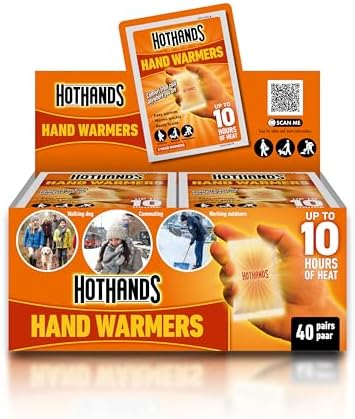
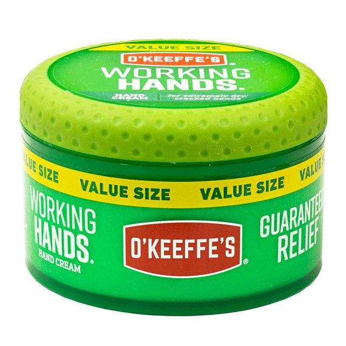
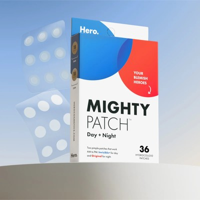
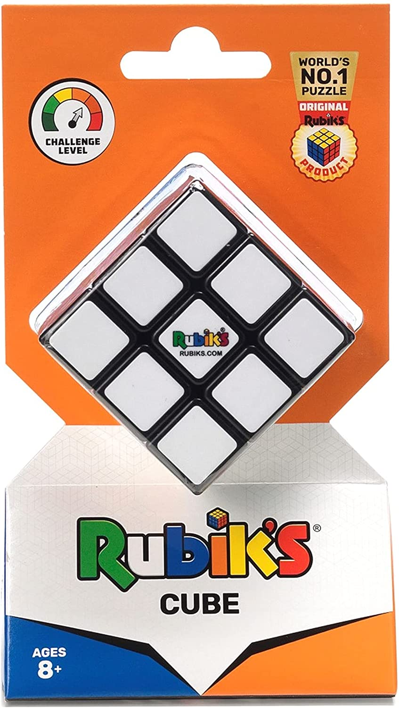
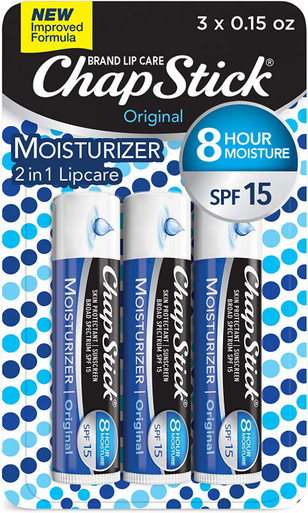
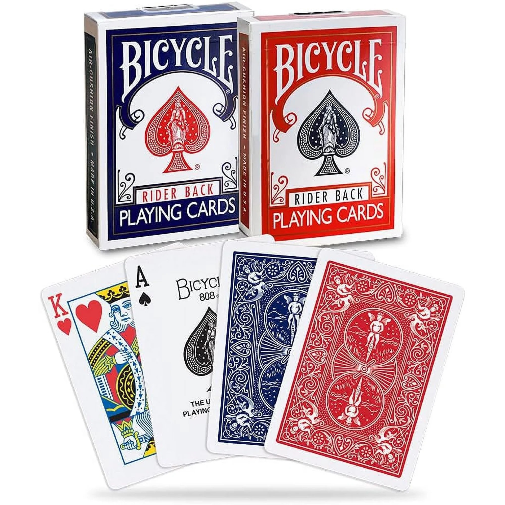
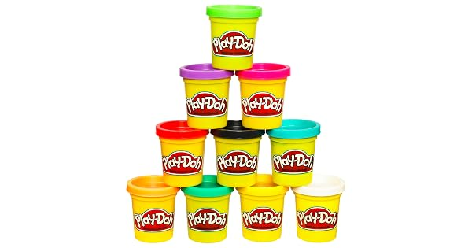
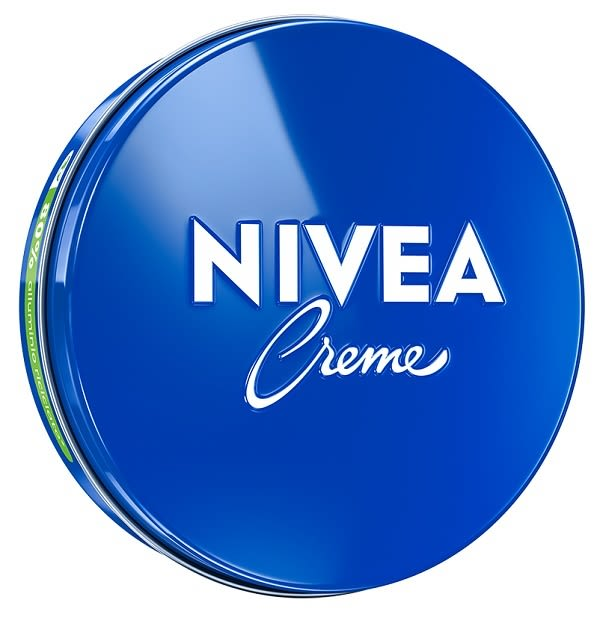
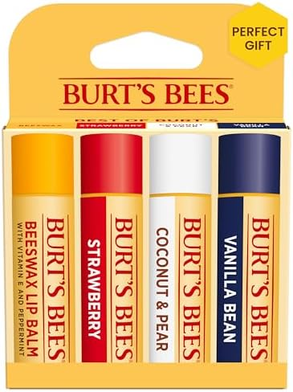
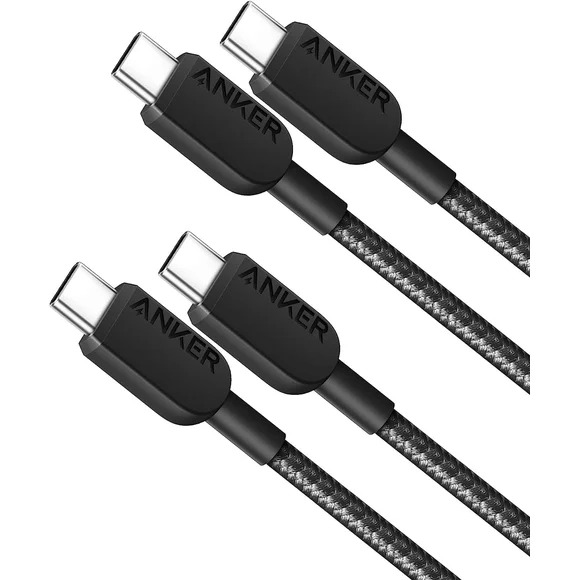

The 10 Best Stocking Stuffers Under $15 (2026 Holiday Gift Guide)
Stocking stuffers are the hardest gifts to buy well. Too cheap and they read as filler; too clever and they never get used. The sweet spot is the small thing someone would buy for themselves on any normal Tuesday but never thinks to — a great lip balm, a spare cable, a pack of hand warmers right as the cold hits.
This guide is built on that rule. Every pick below is under $15, from a brand people actually recognize, and small enough to fit in a stocking with room to spare. Think of it as a build-your-own list: grab three to six of these, mix across recipients, and every stocking fills itself.
How we picked these
- Under $15, really. No "was $30, now $14.99" games. If it can't stay near $15, it didn't make the list.
- Recognizable brands or proven bestsellers. No-name gadgets with 14 reviews and suspiciously perfect English didn't qualify.
- Stocking-sized by design. Every pick fits in a stocking without Tetris. No "great value, just wrap it separately" exceptions.
- Seasonal fit. Winter dry hands, holiday travel, cold weather, game nights — the picks earn their December slot.
We did not accept payment for placement, and we re-check prices before the holiday season each year.

1. HotHands Hand Warmer Value Pack (10 pairs) — the winter stocking anchor
The #1 bestseller in camping hand warmers with a 4.8-star rating across roughly 18,000 reviews. Ten pairs of air-activated warmers that last for hours — ten warm mornings for a stocking-stuffer price. There is no wrong recipient: commuters, dog walkers, tailgaters, kids at the bus stop.
- Pros: #1 category rank; the most universally useful pick on this list; ten pairs means it reads as a real gift, not a single throwaway.
- Cons: single-use, so it's not the eco pick; save it for the season, not summer.
Best for: the anchor slot of every stocking you stuff this year.
Check current price
2. O'Keeffe's Working Hands Hand Cream (3.4 oz jar) — the winter hands fixer
The cult winter hand-care brand: O'Keeffe's Working Hands line ranks near the top of Amazon's hand cream charts, and the jar is the keep-one-in-the-medicine-cabinet format. Dry, cracked winter hands are the most universal December problem there is — this is the gift that says "I noticed."
- Pros: solves a real, seasonal problem; unscented and unglamorous in the best way — it gets used; recognizable brand everyone has seen in a drugstore.
- Cons: it's the least "fun" gift on the list — pair it with something playful below.
Best for: parents, coworkers, and anyone who works with their hands.
Check current price
3. Mighty Patch Day & Night Pimple Patches (36 ct) — the TikTok-approved teen gift
Hero Cosmetics' Mighty Patch is the brand that made hydrocolloid patches a phenomenon — the line ranks #2 in all of Beauty & Personal Care and #1 in pore cleansing strips, with the 36-count Original showing 100K+ bought in a single month. The tiny box slides into any stocking, and teens and twenty-somethings will know exactly what it is.
- Pros: massively viral category with brand-level credibility; day and night patches in one box; zero learning curve.
- Cons: know your recipient — it's a skincare gift, best for teens and young adults.
Best for: teens, college students, and the skincare-curious.
Check current price
4. Rubik's Original 3x3 Cube — the definitive stocking stuffer
Forty-five years and it still ranks #1 in brain teaser puzzles on Amazon. The official Spin Master listing is the real thing — smooth-turning, not the dollar-store knockoff that jams on day two. It's the fidget toy that survived every trend cycle, and it's STEM-adjacent enough for parents to love.
- Pros: the original, from the real manufacturer; endless replay value; works for ages 8 to 80.
- Cons: most people can't solve it — the sticker is the point, not the solve.
Best for: kids' stockings, desk-drawer toys, and nostalgic grandparents.
Check current price
5. ChapStick Moisturizer Original 3-pack (SPF 15) — the $3 impulse classic
Twenty-seven thousand ratings behind the most iconic lip balm on earth, and the 3-pack with SPF 15 reads as "a gift" instead of "a tube I found at checkout." At a couple of dollars, it's the cheapest pick on this list — the perfect topper to fill the toe of any stocking.
- Pros: the lowest price on the list; SPF 15 is a real differentiator; three-pack means one for the purse, one for the desk, one for the car.
- Cons: it's lip balm — it won't win "most thoughtful gift of the year" alone.
Best for: filling out any stocking without thinking twice.
Check current price
6. Bicycle Rider Back Playing Cards 2-pack — the holiday game-night gift
A 140-year-old brand, 4.8 stars across nearly 39,000 ratings, an Amazon's Choice badge, and 2,000+ bought in the past week. Two decks — one red, one blue — feel like a real gift instead of a gas-station impulse. Christmas break is card-game season: gin rummy, poker, magic tricks for the kids.
- Pros: heritage brand with serious review depth; two decks for the price of one impulse buy; enables holiday game nights.
- Cons: only useful if someone in the house plays cards — most houses do by December 26.
Best for: family stockings and the designated game-night host.
Check current price
7. Play-Doh 10-pack (2 oz cans) — the kids' stocking anchor
The Best Seller in kids' art clay & dough, with 100K+ bought in the past month — and a brand that's been around since 1956. Ten 2-ounce cans in classic colors: Amazon itself markets this exact SKU as a Christmas stocking stuffer. It's the HotHands of the kids' lane — the obvious anchor.
- Pros: bestseller status in its category; ten colors keep little hands busy through the holiday chaos; grandparents recognize it instantly.
- Cons: the colors will get mixed into a brown ball by January — that's the tradition.
Best for: kids' stockings, ages 3 to 8.
Check current price
8. NIVEA Creme (2 oz tube) — the everyone-knows-it pick
Over 130 years of skincare behind the blue-tin brand, in a travel-size tube that's practically stocking-shaped by design. It's the cream everyone's grandmother swore by and everyone's dermatologist shrugs at approvingly — face, hands, anywhere dry. When in doubt about a recipient, this is the no-miss slot.
- Pros: universally recognizable; genuinely multipurpose (face, hands, elbows); the tube format keeps it clean and travel-friendly.
- Cons: it's thick — not for anyone who hates rich creams.
Best for: the "I have no idea what to get them" recipient — it never offends.
Check current price
9. Burt's Bees Original Beeswax Lip Balm 4-pack — the keep-one-gift-three gift
The natural-origin lip balm icon, and the 4-pack Original shows 90K+ bought in a single month on Amazon. Four tubes is the perfect stocking logic: keep one, gift three across different stockings, and winter-dry lips are the most December problem there is. It's the premium answer to the ChapStick slot.
- Pros: the four-pack multiplies across stockings; natural-ingredient positioning; massive purchase volume behind it.
- Cons: the classic tingling beeswax formula isn't for sensitive lips.
Best for: splitting across multiple stockings — the best per-dollar value here.
Check current price
10. Anker 310 USB-A to USB-C Braided Cable 2-pack (3 ft) — the spare-everyone-needs
Anker is one of Amazon's most-bought cable brands, and this is the exact gift everyone always needs but never buys: a spare braided USB-C cable. Two 3-foot cables in the box — one for the bag, one for the nightstand. Braided sheathing means it survives the backpack grinder that kills cheap cables.
- Pros: universally needed; two cables for one stocking-stuffer price; braided build outlasts standard rubber cables.
- Cons: USB-A on one end — great for laptops and wall chargers, less so for the newest all-USB-C setups.
Best for: teens, students, and anyone whose cables are always "mysteriously" frayed.
Check current priceQuick comparison
| Stuffer | Best for | Why it wins |
|---|---|---|
| HotHands 10-pair | The anchor | #1 in hand warmers, 18K ratings |
| O'Keeffe's Working Hands | Winter hands | Cult brand, solves December's #1 problem |
| Mighty Patch 36-ct | Teens | TikTok-viral, 100K+ bought in a month |
| Rubik's 3x3 | Kids & desks | The original, #1 in brain teasers |
| ChapStick 3-pack | Stocking fillers | The $3 classic, SPF 15 |
| Bicycle 2-pack | Game nights | 140-year brand, 39K ratings |
| Play-Doh 10-pack | Kids' anchor | Best Seller, 100K+ bought in a month |
| NIVEA Creme tube | The safe pick | 130-year brand, never offends |
| Burt's Bees 4-pack | Splitting across stockings | 90K+ bought in a month, keep-one-gift-three |
| Anker 310 cable 2-pack | Teens & students | The spare everyone needs |
Frequently asked questions
What is the best stocking stuffer under $15?
Start with the anchor: the HotHands 10-pair value pack (#1 in its category) for the universal slot, or the Play-Doh 10-pack for kids. Both are proven bestsellers that read as real gifts, not filler. Round out the stocking with O'Keeffe's Working Hands for the winter problem-solver slot.
How many stocking stuffers should I get?
Roundups suggest 3–6 items per stocking. Use this list as a build-your-own menu: one anchor (HotHands, Play-Doh, or the Bicycle 2-pack), one practical pick (O'Keeffe's, NIVEA, ChapStick, or the Anker cable), and one fun one (Rubik's, Mighty Patch, Burt's Bees 4-pack).
What are good stocking stuffers for teens?
Mighty Patch Day & Night (the TikTok-approved pick), the Anker braided cable 2-pack, and the Bicycle 2-pack for game nights. All three are brands teens actually recognize, which matters more than anything at that age.
Are cheap stocking stuffers under $15 actually any good?
Some are, most aren't — and this list is the some. The difference is brand credibility and purchase volume: Play-Doh at 100K+ bought in a month, Bicycle at 39,000 ratings, HotHands at #1 in its category. A no-name $15 gadget with 14 reviews is a gamble; these are proven products.
What stocking stuffers work for adults?
O'Keeffe's Working Hands, the HotHands 10-pack, NIVEA Creme tube, and the ChapStick 3-pack — winter-seasoned, useful, and seasonally timed. Adults appreciate the "I'll actually use this by January" gift more than novelty.
What about a bigger gift to go with the stocking?
Pair the stocking with one real gift from our guides: the best gifts under $25 for men or best gifts under $25 for women. A well-stocked stocking plus one $25 hero gift beats a pile of filler every time.
The bottom line
The best stocking stuffer under $15 isn't the cleverest one — it's the one that's gone by New Year's. Ten warm mornings, a fixed pair of hands, a cable that saves a dead phone, a deck of cards on Christmas night. Build around the anchor (HotHands for adults, Play-Doh for kids), add one practical and one fun, and every stocking fills itself.
Prices on Amazon change frequently. We re-check this guide before each holiday season, but always confirm the current price on the product page before you buy. As an Amazon Associate, we earn from qualifying purchases made through the links above.